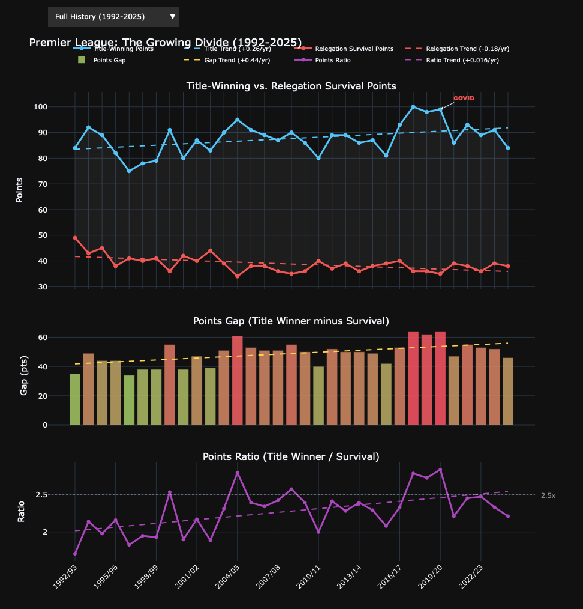

import sys
from pathlib import Path
sys.path.insert(0, str(Path.cwd().parent))
from _utils import (
LEAGUES, scrape_league, enrich_dataframe,
build_league_chart, build_comparison_chart, build_frequency_tables,
)
import pandas as pd
import numpy as np
import plotly.graph_objects as goPremier League: The Growing Divide
33 seasons of English football’s increasing stratification
Eric Schnitger, 2026
Key Findings
- Title-winning points trend upward at roughly +0.25 pts/season
- Relegation survival points are flat or declining at -0.15 pts/season
- The gap has nearly doubled since 1992
- Sharpest inflection: 2016/17 (Pep + Klopp arms race)
- The same six clubs dominate the top 4
config = LEAGUES["premier_league"]
df = scrape_league("premier_league", cache_dir="../data")
df = enrich_dataframe(df)
print(f"Loaded {len(df)} seasons")
df[["Season", "Champion", "Title-Winning Points",
"Survived Relegation", "Relegation Survival Points",
"Relegated 1", "Relegated 2", "Relegated 3"]].tail(10) [PL] cache hit (0.8d old)
Loaded 33 seasons| Season | Champion | Title-Winning Points | Survived Relegation | Relegation Survival Points | Relegated 1 | Relegated 2 | Relegated 3 | |
|---|---|---|---|---|---|---|---|---|
| 23 | 2015/16 | Leicester City | 81 | Sunderland | 39 | Newcastle United | Norwich City | Aston Villa |
| 24 | 2016/17 | Chelsea | 93 | Watford | 40 | Hull City | Middlesbrough | Sunderland |
| 25 | 2017/18 | Manchester City | 100 | Southampton | 36 | Swansea City | Stoke City | West Bromwich Albion |
| 26 | 2018/19 | Manchester City | 98 | Brighton & Hove Albion | 36 | Cardiff City | Fulham | Huddersfield Town |
| 27 | 2019/20 | Liverpool | 99 | Aston Villa | 35 | Bournemouth | Watford | Norwich City |
| 28 | 2020/21 | Manchester City | 86 | Burnley | 39 | Fulham | West Bromwich Albion | Sheffield United |
| 29 | 2021/22 | Manchester City | 93 | Leeds United | 38 | Burnley | Watford | Norwich City |
| 30 | 2022/23 | Manchester City | 89 | Everton | 36 | Leicester City | Leeds United | Southampton |
| 31 | 2023/24 | Manchester City | 91 | Brentford | 39 | Luton Town | Burnley | Sheffield United |
| 32 | 2024/25 | Liverpool | 84 | Tottenham Hotspur | 38 | Leicester City | Ipswich Town | Southampton |
Interactive Analysis
Use the dropdown to switch eras.
eras = [
{"label": "Full History (1992-2025)",
"start": df["Season"].iloc[0], "end": df["Season"].iloc[-1],
"title": "Premier League: The Growing Divide (1992-2025)"},
{"label": "Pre-Abramovich (1992-2003)",
"start": "1992/93", "end": "2002/03",
"title": "Premier League: Pre-Abramovich Era"},
{"label": "Oligarch Era (2003-2016)",
"start": "2003/04", "end": "2015/16",
"title": "Premier League: The Oligarch Era"},
{"label": "Pep/Klopp Era (2016-2025)",
"start": "2016/17", "end": df["Season"].iloc[-1],
"title": "Premier League: The Pep/Klopp Era"},
]
outliers = [
{"season": "2003/04", "y": 90, "text": "Invincibles", "color": "#FFD54F", "ax": -50, "ay": -30},
{"season": "2015/16", "y": 81, "text": "Leicester!", "color": "#66FF66", "ax": -50, "ay": -30},
{"season": "2017/18", "y": 100, "text": "100 pts", "color": "#4FC3F7", "ax": 0, "ay": -25},
{"season": "2019/20", "y": 99, "text": "COVID", "color": "#EF5350", "ax": 40, "ay": -20},
]
# Resolve missing y-values from actual data
for o in outliers:
if o.get("y") is None:
match = df[df["Season"] == o["season"]]
if not match.empty:
o["y"] = int(match["Title-Winning Points"].iloc[0])fig = build_league_chart(df, config, eras=eras, outliers=outliers)
fig
Champions League Concentration
top4, relegated = build_frequency_tables(df, config)
top4.head(10).style.format({"Percentage": "{:.1f}%"}).hide(axis="index")| Club | Top 4 Finishes | Percentage |
|---|---|---|
| Manchester United | 26 | 78.8% |
| Arsenal | 24 | 72.7% |
| Liverpool | 21 | 63.6% |
| Chelsea | 20 | 60.6% |
| Manchester City | 15 | 45.5% |
| Tottenham Hotspur | 7 | 21.2% |
| Newcastle United | 6 | 18.2% |
| Blackburn Rovers | 3 | 9.1% |
| Aston Villa | 3 | 9.1% |
| Leeds United | 3 | 9.1% |
Relegated Clubs
relegated.head(10).style.hide(axis="index")| Club | Times Relegated |
|---|---|
| Norwich City | 6 |
| Leicester City | 5 |
| West Bromwich Albion | 5 |
| Sheffield United | 4 |
| Burnley | 4 |
| Sunderland | 4 |
| Watford | 4 |
| Crystal Palace | 3 |
| Bolton Wanderers | 3 |
| Ipswich Town | 3 |
Era Comparison
rows = []
for era in eras:
if era["start"] not in df["Season"].values:
continue
s = df[df["Season"] == era["start"]].index[0]
e = df[df["Season"] == era["end"]].index[0]
sub = df.iloc[s:e+1]
rows.append({
"Era": era["label"].split("(")[0].strip(),
"Seasons": len(sub),
"Avg Title": round(sub["Title-Winning Points"].mean(), 1),
"Avg Survival": round(sub["Relegation Survival Points"].mean(), 1),
"Avg Gap": round(sub["Gap"].mean(), 1),
"Avg Ratio": round(sub["Ratio"].mean(), 2),
})
pd.DataFrame(rows).style.format({"Avg Ratio": "{:.2f}x"}).hide(axis="index")| Era | Seasons | Avg Title | Avg Survival | Avg Gap | Avg Ratio |
|---|---|---|---|---|---|
| Full History | 33 | 87.700000 | 38.800000 | 48.800000 | 2.28x |
| Pre-Abramovich | 11 | 83.600000 | 41.700000 | 41.900000 | 2.02x |
| Oligarch Era | 13 | 87.700000 | 37.300000 | 50.400000 | 2.36x |
| Pep/Klopp Era | 9 | 92.600000 | 37.400000 | 55.100000 | 2.48x |